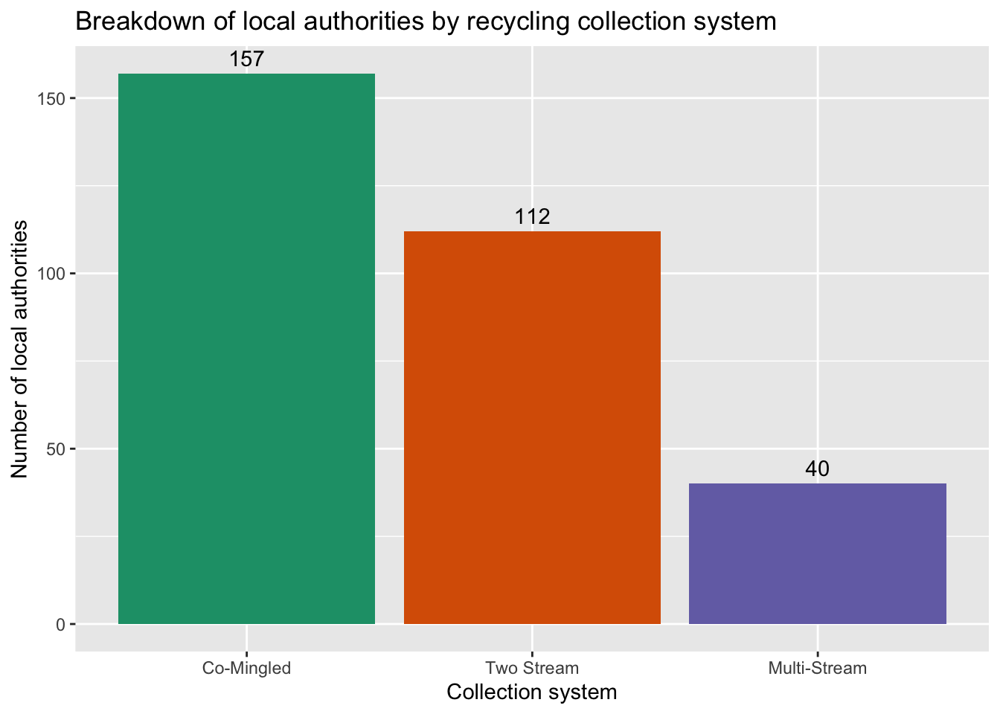
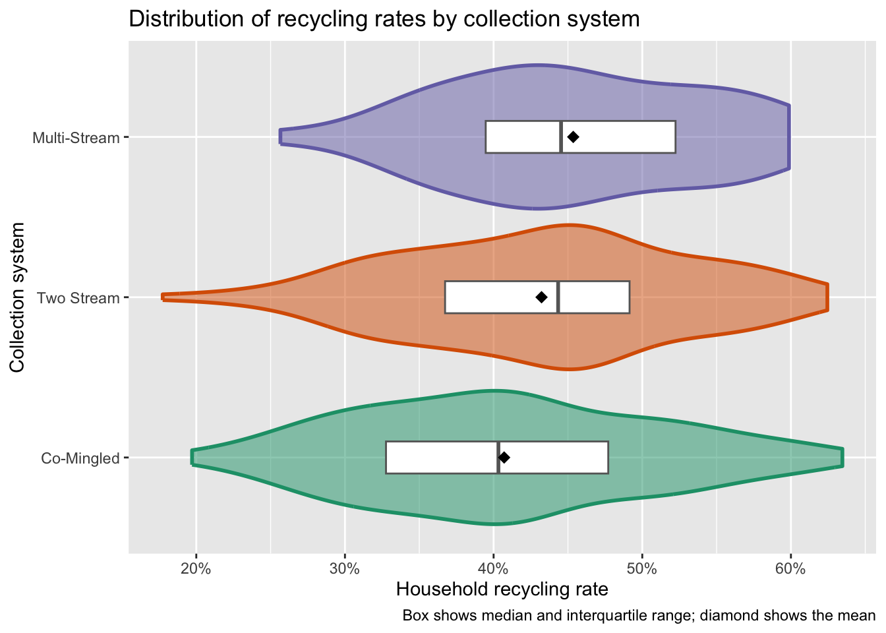
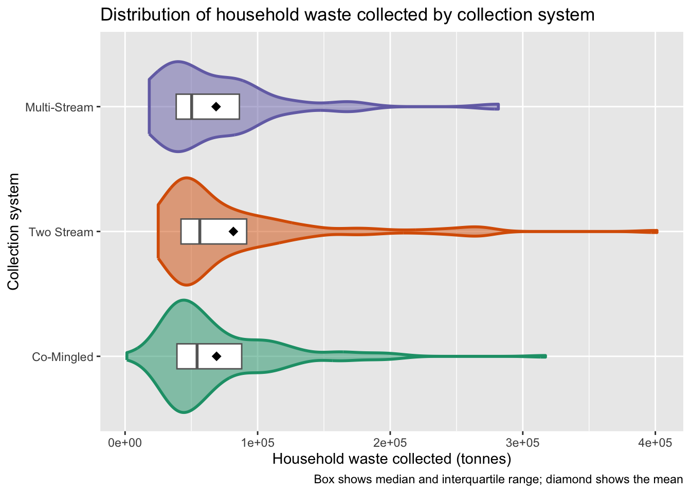
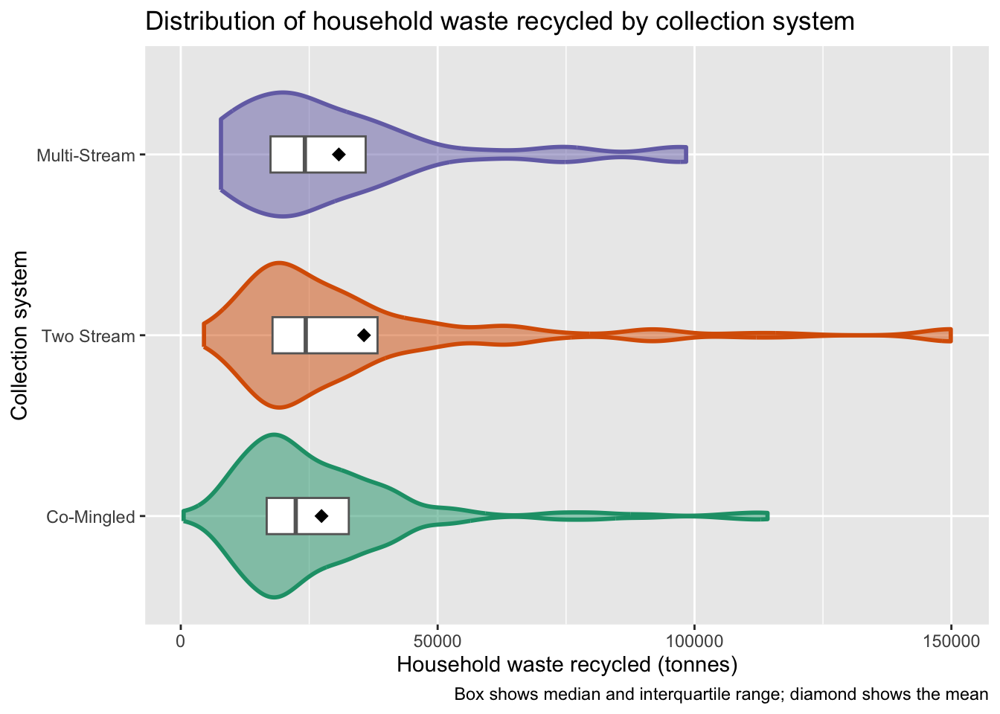

library(here)
library(tidyverse)
library(knitr)
library(moments)
library(rstatix)Comparison of Recycling Systems in England
Does the recycling system have a meaningful impact on recycling rates?
Introduction
This paper sets out to answer the question: Does the recycling system have a meaningful impact on recycling rates?
Local authorities in England can elect to use one of three collection types for household recycling:
- Co-Mingled: all non-organic recyclable material is put into a single bin by the householder
- Two Stream: non-organic recyclable material must be sorted into two bins by the householder (e.g. one bin for glass and metal, and a second bin for paper, card and plastic)
- Multi-Stream: householders sort their non-organic recyclable material into separate bins for each type of material
Multi-Stream systems place a higher burden on the householder, so this paper seeks to investigate whether this higher burden results in higher recycling rates.
Setup
Load required packages
Import the recycling data
The dataset includes information about household recycling for 309 local authorities (LA) in England in 2021. It contains the unique code and name of each LA, the population of the LA in 2021, the type of collection system in place in 2021, the amount of household waste collected and recycled in 2021 (in tonnes) and the household recycling rate.
recycling <-
read_csv(here("data/cln/data_recycling_system.csv")) |>
# reorder factor levels to assist with plotting
mutate(
collection_type = fct_reorder(collection_type, household_recycle_rate)
)
glimpse(recycling)Rows: 309
Columns: 7
$ lad21cd <chr> "E06000001", "E06000002", "E06000003", "E060000…
$ local_authority <chr> "Hartlepool", "Middlesbrough", "Redcar and Clev…
$ population <dbl> 92571, 143734, 136616, 197030, 108222, 128577, …
$ collection_type <fct> Co-Mingled, Co-Mingled, Two Stream, Multi-Strea…
$ household_collected <dbl> 39552, 64433, 57866, 88050, 46203, 59958, 94463…
$ household_recycled <dbl> 12893, 19169, 22077, 22592, 14968, 22137, 39753…
$ household_recycle_rate <dbl> 0.3259759, 0.2975028, 0.3815194, 0.2565815, 0.3…Setup the code for plotting and summarising
# We'll be creating a number of similar plots, so we can wrap the code into a function
plot_distribution <- function(data, yvar, ylab, title, percent = FALSE) {
p <- ggplot(data, aes(x = collection_type, y = {{ yvar }})) +
geom_violin(aes(fill = collection_type, colour = collection_type),
linewidth = 1, alpha = 0.5) +
geom_boxplot(outlier.alpha = 0, coef = 0,
colour = "grey40", width = 0.2) +
stat_summary(fun = mean, geom = "point", shape = 18, size = 3) +
coord_flip() +
scale_colour_brewer(palette = "Dark2", guide = "none") +
scale_fill_brewer(palette = "Dark2", guide = "none") +
labs(
x = "Collection system",
y = ylab,
title = title,
caption = "Box shows median and interquartile range; diamond shows the mean"
)
if (percent) p <- p + scale_y_continuous(labels = scales::percent)
p
}
summarise_distribution <- function(data, yvar) {
data |>
group_by(collection_type) |>
summarise(
n = n(),
mean = mean({{ yvar }}, na.rm = TRUE),
median = median({{ yvar }}, na.rm = TRUE),
sd = sd({{ yvar }}, na.rm = TRUE),
skew = skewness({{ yvar }})
)
}Visualise the distributions
Before we run a significance test, let’s view both the number of LA employing each type of collection system, and the distributions of recycling rates by collection type.
Breakdown of collection systems
fig_1 <-
ggplot(recycling, aes(collection_type, fill = collection_type)) +
geom_bar() +
geom_text(stat = "count", aes(label = after_stat(count)), vjust = -0.5) +
labs(
x = "Collection system",
y = "Number of local authorities",
title = "Breakdown of local authorities by recycling collection system"
) +
scale_fill_brewer(palette = "Dark2", guide = "none")
fig_1
The bar chart shows that the group sizes are uneven. 157 (51%) LA use a co-mingled system, 112 (36%) use a two-stream system and 40 (13%) use a multi-stream system. This unevenness will become a factor in selecting the most appropriate test of statistical significance.
Distribution of recycling rates by system
fig_2 <-
plot_distribution(
recycling,
household_recycle_rate,
ylab = "Household recycling rate",
title = "Distribution of recycling rates by collection system",
percent = TRUE
)
fig_2
summarise_distribution(recycling, household_recycle_rate) |> kable(digits = 3)| collection_type | n | mean | median | sd | skew |
|---|---|---|---|---|---|
| Co-Mingled | 157 | 0.407 | 0.403 | 0.099 | 0.215 |
| Two Stream | 112 | 0.432 | 0.443 | 0.095 | -0.129 |
| Multi-Stream | 40 | 0.454 | 0.445 | 0.086 | -0.038 |
From the distribution plot and the summary table, we can see that multi-stream collection systems achieved the highest mean and median recycling rate in 2021, and co-mingled systems achieved the lowest rates. The skew number tells us that the distributions are not normal. Co-mingled systems show a positive skew, while two stream and multi-stream both show a negative skew.
Why we analyze rate rather than volume
The raw volumes of household waste recycled by local authority are heavily right-skewed, as shown in the plots below. They are dominated by local authority size, since a large council collects and recycles more of everything. This is why the analysis works on the rate of recycling, which normalises for size. It is also why we will use log(population) when we come to control for size in the regression.
fig_3 <-
plot_distribution(
recycling,
household_collected,
ylab = "Household waste collected (tonnes)",
title = "Distribution of household waste collected by collection system"
)
fig_3
summarise_distribution(recycling, household_collected) |> kable(digits = 3)| collection_type | n | mean | median | sd | skew |
|---|---|---|---|---|---|
| Co-Mingled | 157 | 69016.55 | 54330 | 45496.03 | 1.962 |
| Two Stream | 112 | 81700.96 | 56376 | 64916.62 | 2.296 |
| Multi-Stream | 40 | 68661.48 | 50222 | 50777.70 | 2.203 |
fig_4 <-
plot_distribution(
recycling,
household_recycled,
ylab = "Household waste recycled (tonnes)",
title = "Distribution of household waste recycled by collection system"
)
fig_4
summarise_distribution(recycling, household_recycled) |> kable(digits = 3)| collection_type | n | mean | median | sd | skew |
|---|---|---|---|---|---|
| Co-Mingled | 157 | 27397.06 | 22379.0 | 18916.55 | 2.340 |
| Two Stream | 112 | 35662.92 | 24325.5 | 30791.84 | 2.300 |
| Multi-Stream | 40 | 30769.22 | 24156.0 | 22197.09 | 1.639 |
Test for significance
Kruskal-Wallis test
The default statistical test would be a one-way ANOVA, which compares group means. But ANOVA assumes each group is roughly normally distributed with similar variance, and our groups are uneven (157 / 112 / 40) and somewhat skewed, as shown above. Instead, we will use the Kruskal-Wallis test: the non-parametric equivalent. It works on the ranks of the values instead of the raw values, so it makes no assumption about the shape of the distribution, and it handles unequal group sizes comfortably. It tests whether at least one group tends to sit higher than the others.
# Run the KW test for recycling rate as explained by collection type
kw <- kruskal.test(household_recycle_rate ~ collection_type, data = recycling)
kw
Kruskal-Wallis rank sum test
data: household_recycle_rate by collection_type
Kruskal-Wallis chi-squared = 9.8269, df = 2, p-value = 0.007347The test returns H = 9.83 on 2 degrees of freedom, p = 0.007, so at least one system differs significantly.
Effect size
However, a p-value only tells us whether there is an effect, not how big it is. With 309 authorities, even a trivial difference can come out significant. Our question asks about a meaningful impact, so we need an effect size, which measures how much of the variation in recycling rates is explained by collection system.
eff <- recycling |> kruskal_effsize(household_recycle_rate ~ collection_type)
eff |> kable(digits = 3)| .y. | n | effsize | method | magnitude |
|---|---|---|---|---|
| household_recycle_rate | 309 | 0.026 | eta2[H] | small |
Eta-squared is 0.026, meaning collection system explains under 2.6% of the variation in recycling rates.
Dunn’s test
Finally, we can run Dunn’s test to see which of the collection types show a significant difference in terms of recycling rates.
dunn <- recycling |>
dunn_test(household_recycle_rate ~ collection_type,
p.adjust.method = "holm")
dunn |>
kable(digits = 3)| .y. | group1 | group2 | n1 | n2 | statistic | p | p.adj | p.adj.signif |
|---|---|---|---|---|---|---|---|---|
| household_recycle_rate | Co-Mingled | Two Stream | 157 | 112 | 2.233 | 0.026 | 0.051 | ns |
| household_recycle_rate | Co-Mingled | Multi-Stream | 157 | 40 | 2.754 | 0.006 | 0.018 | * |
| household_recycle_rate | Two Stream | Multi-Stream | 112 | 40 | 1.149 | 0.251 | 0.251 | ns |
Dunn’s test found adjusted p-values of 0.051, 0.018 and 0.251.
Interim findings
Limitations
[FURTHER CONCLUSIONS HERE]
That being said, there are other reasons that a local authority may choose a Multi-Stream system over a Co-Mingled one. The lack of a Materials Recovery Facility, where co-mingled waste can be sorted by machine, may force certain LAs to opt for kerbside sort.